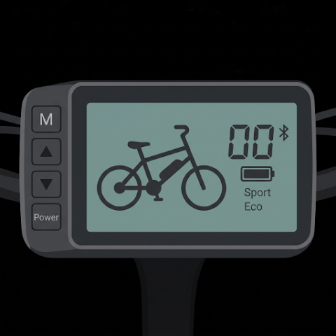
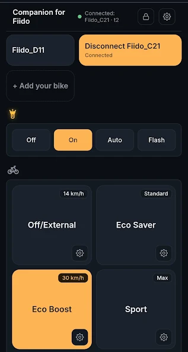
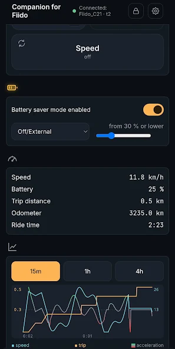

Custom speed limits.
Set a custom speed limit for each riding mode with Lite, within your bike’s standard supported range. Name your modes and switch with a tap.
Choose the names. Make them yours.

Companion for FiidoFOR FIIDO RIDERS · ANDROID APP
Meet Companion for Fiido. Connect to your e-bike over Bluetooth and make every ride feel more like yours.
Custom speed limits. Fiido Rocket Mode.
Your own ride modes. Live ride data.
Features depend on your bike’s controller and plan.
Free to download · In-app purchases · Android 7.0+
Test compatibility before you buyAn independent app by Beyond Belief.
Not affiliated with or endorsed by Fiido.

LESS FRICTION. MORE CONTROL.
Set up your preferences once.
Bring them along for every ride.
Set a custom speed limit for each riding mode with Lite, within your bike’s standard supported range. Name your modes and switch with a tap.
Choose the names. Make them yours.
See speed, battery and distance as you ride. Look back at your recent ride with live charts, and choose kilometres or miles.
Live data in the free version.
With Pro, activate Fiido Rocket Mode on supported controllers. Set it up once and the app reapplies it when you connect.
Requires a compatible controller. Use only where permitted by local law.

CONNECTED, WITHOUT THE COMPLICATION.
Turn on your Fiido, open the app and select your bike.
Choose your modes, lights and units. You can even prepare your settings away from the bike.
Auto Connect looks for your bike. Apply your saved setup with a tap.
YOUR BIKE COMES FIRST.
Compatibility depends on your bike’s controller, region and production date. Even two bikes with the same model name can support different features.
That’s why you can test the paid features on your own bike before buying.
Check it on your bikeSTART WITH THE FREE APP
Subscriptions also include a 7-day free trial. See current plans and terms in the app and Google Play.
Pro adds Fiido Rocket Mode on supported controllers. Use only where permitted by local law.
A FEW THINGS TO KNOW
No. Companion for Fiido is an independent app by Beyond Belief. It is not made, sponsored or endorsed by Fiido. Fiido is a trademark of its respective owner.
Features depend on your bike’s hardware and controller. Model name alone does not guarantee compatibility. Download the free app, connect your bike and use the included Lite and Pro test sessions before purchasing.
The free version includes Bluetooth connection, named modes, manual light controls and live ride data. Lite adds features including multiple bike setups, automatic lights, battery saver and custom speed limits within the standard range. Pro adds Fiido Rocket Mode for supported bikes. Check the app for current prices and available plans.
No registration is required. The app talks directly to your bike over Bluetooth, and your settings and bike data stay on your phone. Purchases and subscription trials are managed by Google Play.
Email companion@beyondbelief.ai with your bike model and a description of the issue.
YOUR NEXT RIDE STARTS HERE.
Android 7.0+ · Free download with in-app purchases